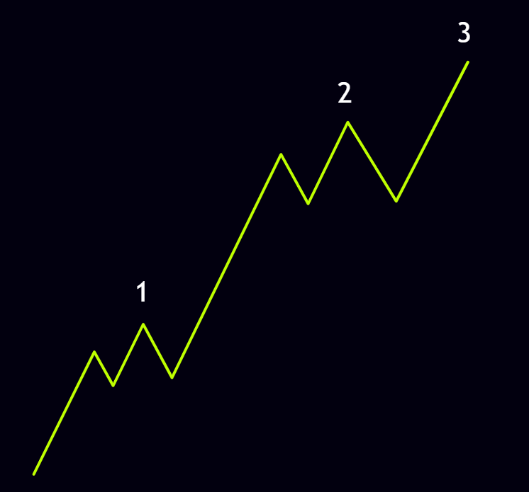
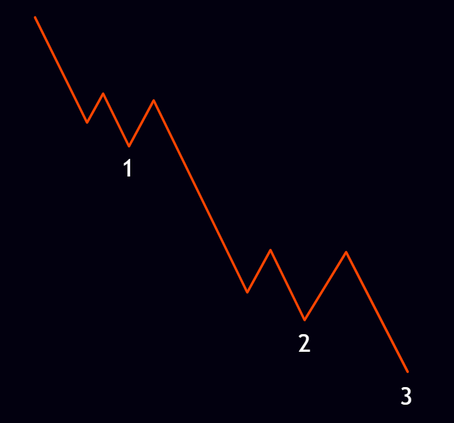
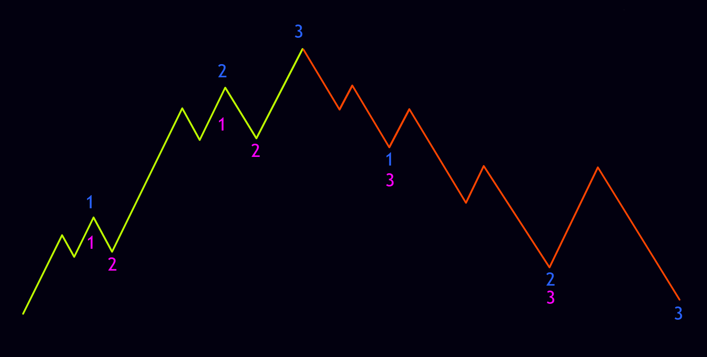
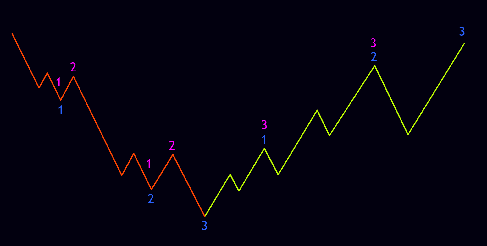
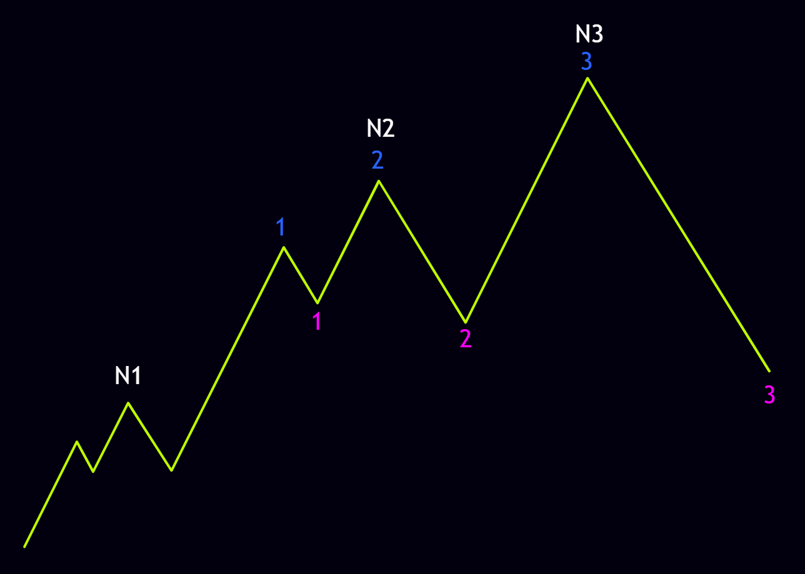
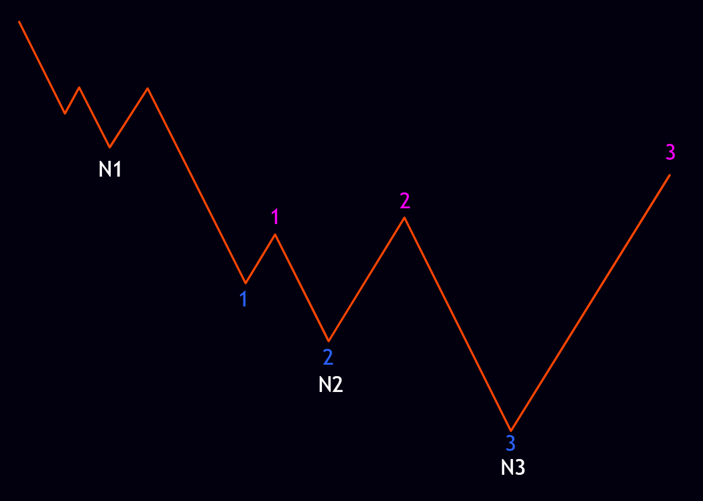
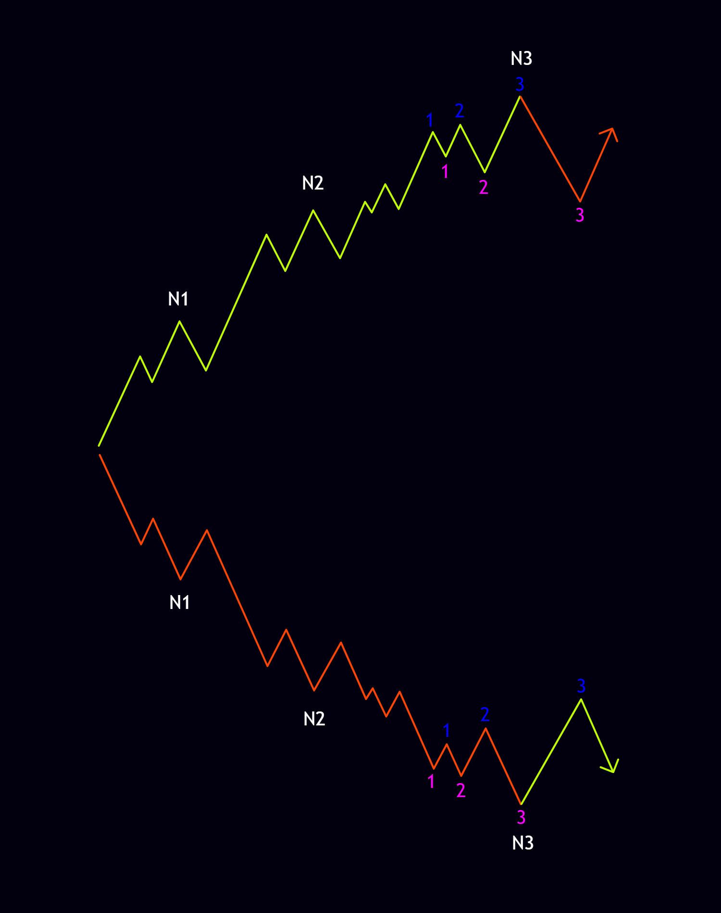
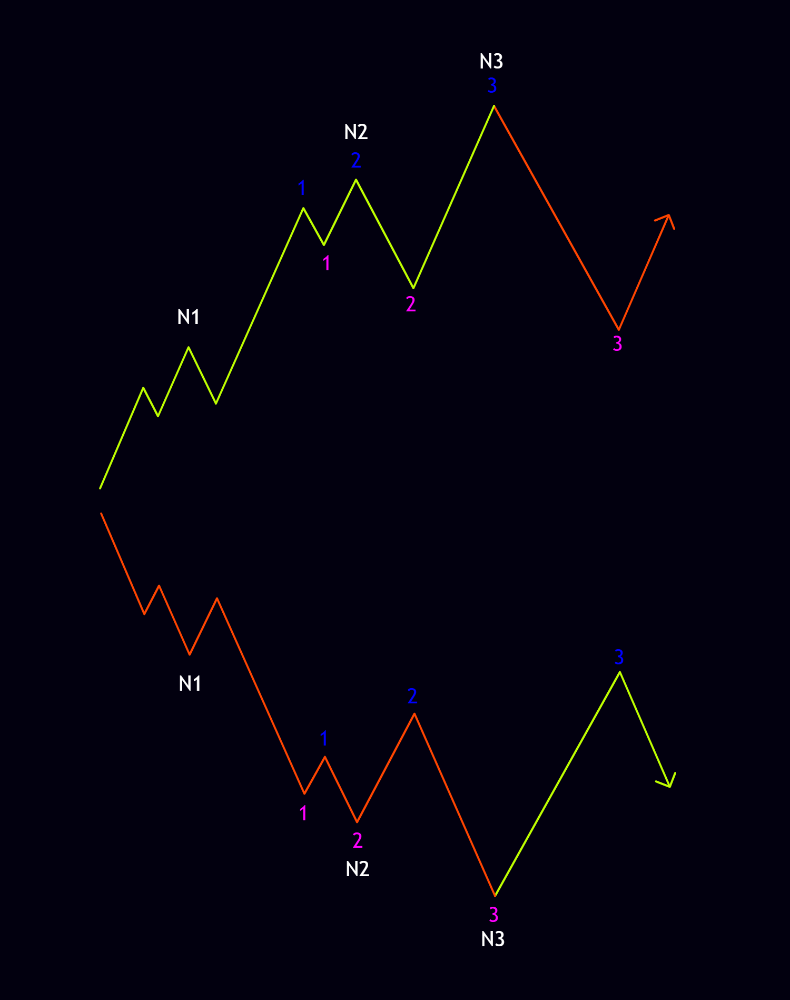
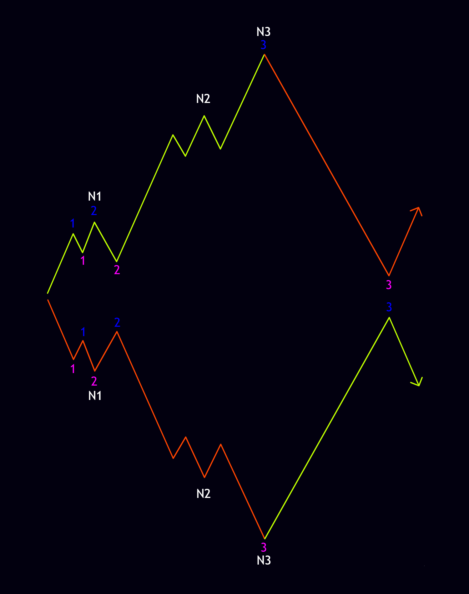

The order in which nodes form is called a sequence. A sequence is essentially a specific order that nodes must follow along the market’s two main axes: the X-axis and the Y-axis. In this sequence, nodes on both the X and Y axes must line up one above or below the other. On the Y-axis—the trend axis—Node 1 forms first, followed by Node 2 and then Node 3. On the X-axis the sequence is completed when the remaining Pending 1-2s left over from the Y-axis trend nodes are resolved.
Together these two axes give us a complete picture of price movement. The Y-axis shows the primary direction of the trend, while the X-axis shows the corrections and the resolution of previously open structures. Understanding the sequence properly helps a trader see exactly where the market sits in its move and whether the trend still has room to continue.
In an uptrend, Node 1 starts from the lowest point (the market’s price floor). Node 2 then forms in the middle of the uptrend, and the uptrend ends with Node 3. This order is simple but extremely important. Node 1 usually marks the market’s first move off the low, Node 2 confirms the trend is continuing, and Node 3 is often the last push higher before a correction or a change in direction. The Schematic below shows the bullish trend sequence.

In a downtrend, Node 1 starts from the highest point (the market’s price ceiling). Node 2 forms in the middle of the downtrend, and the downtrend finishes with Node 3. The logic here is the exact reverse of an uptrend. Node 1 marks the market’s first move off the high, Node 2 confirms continued selling pressure, and Node 3 is usually the final downward push before a bullish reaction or a structural shift. The Schematic below shows the bearish trend sequence.

As explained in the cycle section, a positive cycle is made up of an uptrend on the left and a downtrend on the right. The Y-axis sequence—both the uptrend and the downtrend—completes exactly as described above. The X-axis sequence is completed when the Pending 1-2s of the left-side uptrend nodes are resolved. In other words, after the uptrend finishes, the market has to close the open structures on the left side for the cycle to be complete. The Schematic below shows the positive cycle sequence.

A negative cycle consists of a downtrend on the left and an uptrend on the right. The Y-axis sequence—both the downtrend and the uptrend—completes the same way as above. The X-axis sequence is finished when the Pending 1-2s of the left-side downtrend nodes are resolved. The logic is the same as a positive cycle, except the initial direction is down and the market must close the open bearish structures on the left. The Schematic below shows the negative cycle sequence.

Why do some cycles never close, and the market just keeps moving without finishing them? The answer lies in the nodes section: once the market has completed its trend with three nodes, those three nodes can turn into a new larger Node 1 and the market can continue in the same direction. The real reason, however, is found in the node sequence itself. When the market completes its sequence on both the X and Y axes, it no longer needs to close the cycle and can simply keep going. Completing the sequence on both axes means the market has printed three nodes on the Y-axis and three nodes on the X-axis. The diagrams below show the schematic of a completed positive sequence and a completed negative sequence.


As you can see in the schematic above, the market has finished its bullish or bearish trend with three nodes (N1, N2, N3), yet the node sequence itself is completed inside the bullish or bearish Node 2. Therefore the market can resume its upward or downward path simply by resolving the first Pending 1-2 of the left-side trend. This is one of the most practical points about sequence: the market does not always need to close every structure; sometimes closing the first open structure is enough for it to continue.
An important distinction to keep in mind is that the pink and blue 1s, 2s and 3s are not node numbers—they are used only for counting the sequence. In the nodes section we talked about the Pending 1-2s of the nodes; the 1 and 2 on the X-axis are exactly those Pending 1-2s, and when they become a 3 the Pending 1-2 is resolved and the X-axis sequence is complete. This distinction is critical so we don’t mix up the counting.
Putting all of this together, we can say that the sequence starts from the end of the trend, not the beginning—that is, we can identify the sequence only after the three nodes have been completed. According to the node rules, once three nodes are finished the market can take one of three paths:
Depending on which of these three scenarios occurs, the market sequence can take different shapes. Recognizing these three possibilities lets the trader anticipate the various scenarios in advance and be ready for each of them.
In this case the market will resolve one of the internal Pending 1-2s inside Node 3, and the sequence completes as shown below. This behavior usually signals that the move in the previous trend direction is strong and that the market prefers to close the more internal structures without touching the larger ones.

Here the market resolves one of the internal Pending 1-2s inside Node 2, and the sequence completes as shown below. This is one of the most common market behaviors and often allows the main trend to resume after a relatively deep correction.

In this case the market closes every Pending 1-2 belonging to the nodes on the left side and effectively turns into a complete cycle; the sequence of complete cycles looks like the schematic below. This usually marks the end of a major move and leaves the market at a crossroads between a change of direction and a continuation of the previous trend.

A deep understanding of market node sequence lets a trader see not only the current market direction but also exactly which stage of structural completion the market is in. The result is more precise analysis, lower risk, and a higher probability of success.